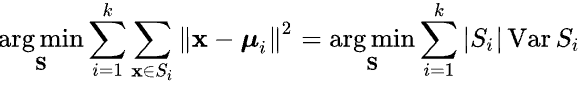

Chapter 7 Unsupervised Learning
Clustering is an unsupervised learning algorithm. These algorithms can classify data into multiple groups. Such classification is based on similarity.
Within-cluster variation will be thus minimized by optimizing within-cluster sum of squares of Euclidean distances (ref)

7.1 K-means
K-means is a very popular clustering algorithm, that partitions the data into \(k\) groups.
Algorithm:
- Determine a number \(k\) (e.g., could be 3)
- randomly select \(k\) subjects in a data. Use these points as staring points (centers or cluster mean) for each cluster.
- By Euclidean distance measure (from the initial centers), try to determine in which cluster the remaining points belong.
- compute new mean value for each cluster.
- based on this new mean, try to determine again in which cluster the data points belong.
- process continues until the data points do not change cluster membership.
7.2 Read previously saved data
ObsData <- readRDS(file = "data/rhcAnalytic.RDS")7.2.1 Example 1
datax0 <- ObsData[c("Heart.rate", "edu")]
kres0 <- kmeans(datax0, centers = 2, nstart = 10)
kres0$centers## Heart.rate edu
## 1 54.55138 11.44494
## 2 134.96277 11.75466plot(datax0, col = kres0$cluster, main = kres0$tot.withinss)
7.2.2 Example 2
datax0 <- ObsData[c("blood.pressure", "Heart.rate",
"Respiratory.rate")]
kres0 <- kmeans(datax0, centers = 2, nstart = 10)
kres0$centers## blood.pressure Heart.rate Respiratory.rate
## 1 80.10812 135.08956 29.85267
## 2 73.71684 54.95789 22.76723plot(datax0, col = kres0$cluster, main = kres0$tot.withinss)7.2.3 Example with many variables
datax <- ObsData[c("edu", "blood.pressure", "Heart.rate",
"Respiratory.rate" , "Temperature",
"PH", "Weight", "Length.of.Stay")]kres <- kmeans(datax, centers = 3)
#kres
head(kres$cluster)## [1] 1 1 1 3 1 2kres$size## [1] 2793 1688 1254kres$centers## edu blood.pressure Heart.rate Respiratory.rate Temperature PH
## 1 11.85833 54.26924 136.37451 29.76119 37.85078 7.385249
## 2 11.54214 128.33886 126.12026 29.36611 37.68129 7.401027
## 3 11.46134 65.47249 53.24242 22.65973 37.01597 7.378482
## Weight Length.of.Stay
## 1 68.63384 23.42356
## 2 66.68351 20.68128
## 3 67.57291 18.58931aggregate(datax, by = list(cluster = kres$cluster), mean)## cluster edu blood.pressure Heart.rate Respiratory.rate Temperature
## 1 1 11.85833 54.26924 136.37451 29.76119 37.85078
## 2 2 11.54214 128.33886 126.12026 29.36611 37.68129
## 3 3 11.46134 65.47249 53.24242 22.65973 37.01597
## PH Weight Length.of.Stay
## 1 7.385249 68.63384 23.42356
## 2 7.401027 66.68351 20.68128
## 3 7.378482 67.57291 18.58931aggregate(datax, by = list(cluster = kres$cluster), sd)## cluster edu blood.pressure Heart.rate Respiratory.rate Temperature
## 1 1 3.162485 11.93763 23.13140 13.67791 1.781692
## 2 2 3.091605 18.58070 27.68369 14.08169 1.610746
## 3 3 3.160538 31.89150 23.63993 13.60831 1.832389
## PH Weight Length.of.Stay
## 1 0.1082140 27.99506 29.01143
## 2 0.1009567 32.15078 23.37223
## 3 0.1226041 26.87075 20.820247.3 Optimal number of clusters
require(factoextra)
fviz_nbclust(datax, kmeans, method = "wss")+
geom_vline(xintercept=3,linetype=3)Here the vertical line is chosen based on elbow method (ref).
7.4 Discussion
- We need to supply a number, \(k\): but we can test different \(k\)s to identify optimal value
- Clustering can be influenced by outliners, so median based clustering is possible
-
mere ordering can influence clustering, hence we should choose different initial means (e.g.,
nstartshould be greater than 1).
Group characteristics include (to the extent that is possible)